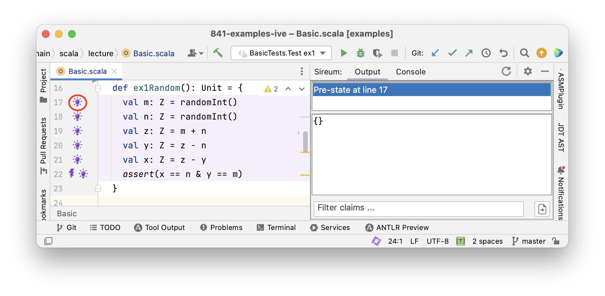
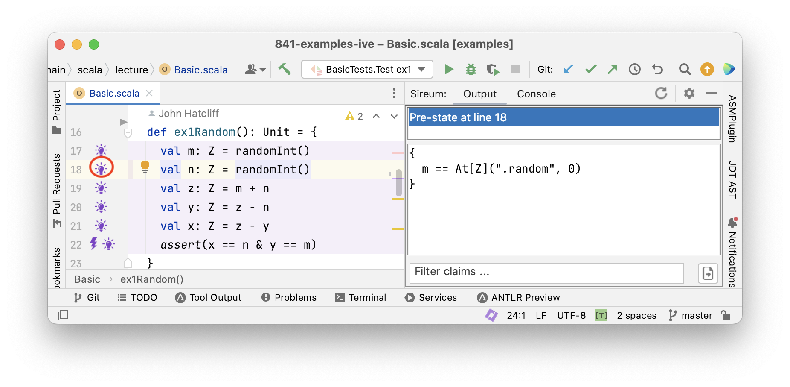
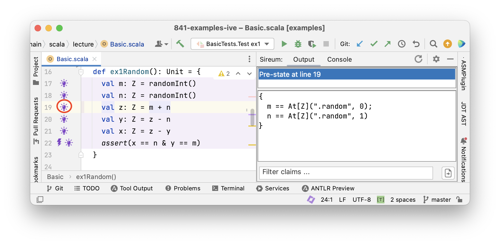
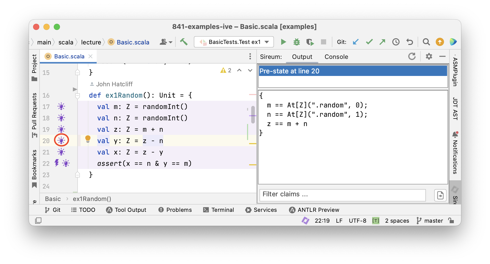
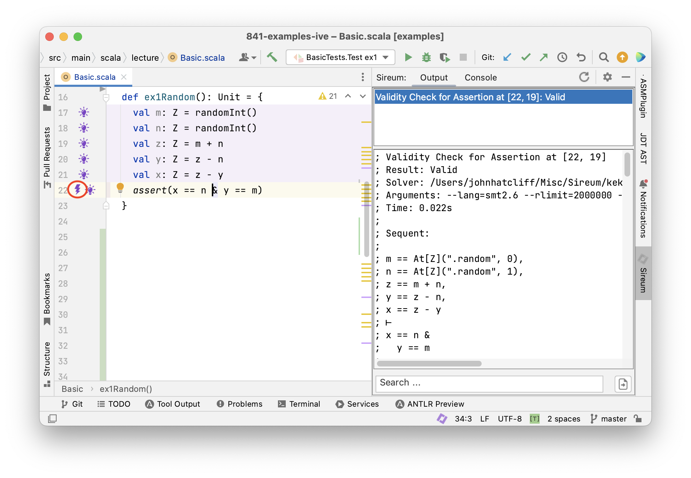

Lecture Summary: Tracing Facts
Tracing Values
Execution as Value Calculation
A common way to reason about a program is to trace its execution and try to determine the values of variables at different in the execution. The simplest approach that students follow when learning to program is to add some “print” statements in their code to print out the values of variables at certain points. Later, one learns how to use a debugger, which can show the current values of variables without having to add explicit “print” statements. Once we become experienced programmers, we often use a debugger, but it is second-nature for us to look at code and predict the possible values of variables at specific points. When looking for program errors, we often imagine the “correct” or “desired” or “expected” values of variables and then look for possible deviations (e.g., with “print” statements or with the debugger). In other words, we calculate “in our heads” expected values and compare them to those produced by program execution. We can follow a similar approach directly without executing a program: we can state expected values by asserting them and compare them to those produced by mental calculations.
Looking at a series of examples will help us tie together some basic relationships between our natural intuitions, automated program verification, and testing. Consider the simple straightline code below.
1val m: Z = 3
2val n: Z = 5
3val z: Z = m + n
4val y: Z = z - n
5val x: Z = z - y
6assert(x == 5 & y == 3)
This code fragment initialises variable m to 3 and variable n to 5. We use an assertion at the end of the program
to claim that variable x equals 5 and variable y equals 3.
We now construct a “mental trace” of the program to see if our claim holds.
We state in interspersed comments the variable values that we deduce (calculate “in our heads”), e.g., using comments like the following..
// deduce v == e & w == f & ...
…which indicate that we deduced variable v has value e, and so on.
1val m: Z = 3
2// deduce m == 3
3val n: Z = 5
4// deduce m == 3 & n == 5
5val z: Z = m + n
6// deduce m == 3 & n == 5 & z == 8
7// ...because we calculate that 3 (value of m) + 5 (value of n) == 8
8val y: Z = z - n
9// deduce m == 3 & n == 5 & z == 8 & y == 3
10// ...because we calculate that 8 (value of z) - 5 (value of n) == 3
11val x: Z = z - y
12// deduce m == 3 & n == 5 & z == 8 & y == 3 & x == 5
13// ...because we calculate that 8 (value of z) - 3 (value of y) == 5
14assert(x == 5 & y == 3)
In this example, since all variables are assigned only once, we can focus our attention on the value of each “new” variable because each previously assigned variable retains its same value.
The calculation right before the assertion yields y == 3 & x == 5, i.e., the calculation confirms the expected values stated in the assertion.
Example: Experimenting with the Program via Testing
Instead of tracing variable values in our head, we design an experiment on the code with a testing framework, and then use a debugger to launch the experiment and observe the variable values as the execution proceeds (see Appendices XXX and YYY for suggestions for setting up your code, tests, and running the debugger).

The screenshot above shows the IntelliJ IDE: we have placed our example code above in a Slang function ex1 (top editor pane) and then written a test method in the ScalaTest framework that will execute ex1 (bottom editor pane). Adding a break point at line 9 and then launching the test using the IntelliJ debugger allows us to use the debugger to step line-by-line through the ex1 code. The debugger view at the bottom of the screen shows the current values of variables defined up to the current point in the execution, and the code itself is annotated to show the values of the two most-recently assigned variables. Note how closely this matches our manually added deduce comments in the example above. Of course, this is to be expected because years of experience with building debuggers has led tool providers to design the debugging facilities to align with how developers naturally think about and interact with their programs!
Here are some key points that we would like to emphasize about how testing supplements our manual reasoning about programs.
- When we execute a test, we perform an experiment on the program and then we make observations about its behavior.
- Ideally, we have one or more hypotheses about the behavior that we expect to observe. Often our hypotheses are indicated as expected results in a test. In the example above, we can think of the assertion as specifying our hypothesis or our desired outcome for the experiment.
- Each test/experiment will lead to a single execution trace of the code. When we use a debugger in combination with the test, the debugger helps us make intermediate observations about the trace (e.g., values of variables) as the trace unfolds.
Limitations of Tracing Values Only
The code above is extremely easy for us to reason about because it gives rise to a single trace. Therefore,
- we were able to determine a specific value for each variable at each point in the program
- we were able to completely explore (“cover”) the code’s behavior with a single experiment (test)
What if we don’t know the initial values of variables m and n? In Slang, one way to express this is by writing using the randomInt() function. Function randomInt() specifies that an arbitrary integer value is chosen by the underlying runtime system.
1val m: Z = randomInt()
2val n: Z = randomInt()
Now consider how you would reason about a variation of the original code that uses randomInt() for the initial values of m and n.
1val m: Z = randomInt()
2val n: Z = randomInt()
3val z: Z = m + n
4val y: Z = z - n
5val x: Z = z - y
6assert(x == n & y == m)
- What should you record in comments for the values of
mandn? - What should you record in comments for the values of
zandy? - When you consider the specific values that might get assigned to
mandn, how many executions traces are possible for this code?
Trying to answer the questions above leads to the following conclusions:
- for all practical purposes, there are an unlimited number of possible values for the program variables in the code above, so trying to determine the complete meaning of the code by reasoning only in terms of concrete values is infeasible.
- for all practical purposes, there are an unlimited number of traces for the code.
While we can often get valuable intuition by looking at examples with specific values and specific traces, that is not enough for us to reason about the complete meaning of the program nor ensure that it is free from error.
(ToDo: Experimenting with a program with a test and a debugger only covers one execution trace at a time. We have a potentially infinite number of traces).
Tracing Facts
To addressing the limitations outlined above, we need to expand the concept of tracking specific values of variables to tracking facts (i.e., constraints or properties about all the possible values that a variable might take on during any possile execution). We can still handle situations where we happen to know the specific value of a variable: a specific variable value is just a special kind of fact that constrains a variable to one value.
Let’s consider this example in more detail.
Example: Deducing Facts for Immutable Variables
1val m: Z = randomInt()
2val n: Z = randomInt()
3val z: Z = m + n
4val y: Z = z - n
5val x: Z = z - y
6assert(x == n & y == m)
There’s nothing to deduce from the first two assignments except that m and n have arbitrary values.
The first “interesting” fact that we can deduce follows the assignment to z.
After this assignment z must equal m + n.
We deduce z == m + n corresponding directly to the assignment z = m + n.
Let’s insert a comment introducing this fact.
1val m: Z = randomInt()
2val n: Z = randomInt()
3val z: Z = m + n
4// deduce z == m + n
5val y: Z = z - n
6val x: Z = z - y
7assert(x == n & y == m)
We can see immediately that there is such a fact immediately deducible from each assignment statement.
Let’s add those and label them as statement facts: assignment. In subsequent chapters, we will see
how each category of program statement gives rise to a specific form of statement facts.
1val m: Z = randomInt()
2val n: Z = randomInt()
3val z: Z = m + n
4// deduce z == m + n (statement fact: assignment)
5val y: Z = z - n
6// deduce y == z - n (statement fact: assignment)
7val x: Z = z - y
8// deduce x == z - y (statement fact: assignment)
9assert(x == n & y == m)
Note that deduced information immediately above the asserion is not enough deduce x == n and y == m.
There are some additional principles that we need to incorporate.
Propagating previously deduced facts: In many situations in our code, facts deduced at early points in the program can be “carried along” and brought to the current code point that we are reasoning about. Our example code block is designed to emphasize a particular code style where we can always carry previously deduced facts forward, i.e., situations where we are not updating (re-assigning to variables) but only introducing new variable names. Because each “variable” is our example is assigned only once (emphasized by their val declarations), we can bring “old facts” about those variables forward.
Observe that we can record facts about the variable z (e.g., z == m + n) after the assignments to y and x even though
z is assigned before y and x.
We can bring the fact z == m + n to points later in the code because the fact still holds
(nothing has interferred with the values of z, m, or n in the mean time).
1val m: Z = randomInt()
2val n: Z = randomInt()
3val z: Z = m + n
4// deduce z == m + n (statement fact: assignment)
5val y: Z = z - n
6// deduce z == m + n (previously deduced and still valid fact)
7// deduce y == z - n (statement fact: assignment)
8val x: Z = z - y
9// deduce z == m + n (previously deduced and still valid fact)
10// deduce y == z - n (previously deduced and still valid fact)
11// deduce x == z - y (statement fact: assignment)
12assert(x == n & y == m)
Having explained how previously deduced facts can be carried along when they remain valid, from now on we will
abbreviate our annotations for such facts and simply say (previously deduced fact) with the implicit qualification
that they still remain valid.
Use computational principles (i.e., the “theory”) of the data types of our variables: Even though we are not tracking concrete values, we can often predict how our program will compute common operations like addition and subtraction on numberic values, taking the head or tail of a list, etc. In the case of integers, such reasoning often amounts to applying principles that we learned in algebra. Then we add additional reasoning properties for equality and “substitution of equals for equals”.
For example, consider what we can do with the two facts z == m + n and y == z - n right after the assignment to y:
- We can deduce
y == (m + n) - nfrom the two facts about becausezis equal tom + n– thus we can “replace” or “substitute”m + nforzin the facty == z - n - We can then deduce
y == m + (n - n)by using algebraic reasoning to reassociate the subtraction to apply to the references ton. - Then we use the principles (theory) of the subtraction operation to conclude that
n - nis equal to0 - Then we can replace
n - nwith0to obtainy == m + 0 - Finally, can deduce
y == mimmediately after the assignment toyusing the algebraic property that0is the identity element for addition.
The fact y == m is not affected by the assignment to x, thus we can carry it forward as we do the other facts to obtain
the following.
1val m: Z = randomInt()
2val n: Z = randomInt()
3val z: Z = m + n
4// deduce z == m + n (statement fact: assignment)
5val y: Z = z - n
6// deduce z == m + n (previously deduced fact)
7// deduce y == z - n (statement fact: assignment)
8// deduce y == m (proof via algebra)
9val x: Z = z - y
10// deduce z == m + n (previously deduced fact)
11// deduce y == z - n (previously deduced fact)
12// deduce y == m (previously deduced fact)
13// deduce x == z - y (statement fact: assignment)
14assert(x == n & y == m)
Now, we can apply the same strategy after the assignment to x to gain some additional facts.
From z == m + n and y == m and x == z - y, we deduce x == (m + n) - y, further x == (m + n) - m,
and further x == (m - m) + n, and x == 0 + n, thus x == n.
1val m: Z = randomInt()
2val n: Z = randomInt()
3val z: Z = m + n
4// deduce z == m + n (statement fact: assignment)
5val y: Z = z - n
6// deduce z == m + n (previously deduced fact)
7// deduce y == z - n (statement fact: assignment)
8// deduce y == m (proof via algebra)
9val x: Z = z - y
10// deduce z == m + n (previously deduced fact)
11// deduce y == z - n (previously deduced fact)
12// deduce y == m (previously deduced fact)
13// deduce x == z - y (statement fact: assignment)
14// deduce x == n (proof via algebra)
15assert(x == n & y == m)
Now we can see that we have facts enough to establish that the assertion never fails, regardless of the
random values assigned to m and n.
In summary, facts that we use to demonstrate program correctness come from different sources and principles as indicated above. Knowledge about the program is gathered and increased by inferring new facts.
We have generalised the approach of tracing values in programs to tracing facts. This has permitted us to demonstrate program correctness independently of variables’ initial values. Without much difficulty we have attained a much more powerful method to verify programs.
We expect that the steps that we have applied could also be carried out automatically. For reasoning about the example above, the automation could record our knowledge about the program in several different ways, and it could
proceed with the reasoning in a different order.
For example, at each assignment, the automation could alternatively just obtain new facts that are immediate consequences of the current assignment and carry over previously deduced facts (i.e., it could omit deducing fact using algebra).
Then, it could lazily only perform the reasoning based on algebra, substitution, etc. when there is some need for it in the program, for example, when we need to establish that an assertion is correct. The code below expresses that strategy using our comment notation.
1val m: Z = randomInt()
2val n: Z = randomInt()
3val z: Z = m + n
4// deduce z == m + n (statement fact: assignment)
5val y: Z = z - n
6// deduce z == m + n (previously deduced fact)
7// deduce y == z - n (statement fact: assignment)
8val x: Z = z - y
9// deduce z == m + n (previously deduced fact)
10// deduce y == z - n (previously deduced fact)
11// deduce x == z - y (statement fact: assignment)
12// deduce y == m (proof via algebra)
13// deduce x == n (proof via algebra)
14assert(x == n & y == m)
This later approach, which can be summarized as “accumulate syntactically obvious facts, but perform more complicated deductions only when needed” is the strategy that Logika and many other automated verifiers use.
Tracing Facts with Logika
Logika





Tracing Facts for Mutable Variables
So far, we have reasoned about programs with immutable variables that are only assigned a value once. This was helpful
- to learn about how facts propagate though programs
- to get a first impression of Logika
Next, we consider mutable variables that can be assigned a new value repeatedly. As a consequence, we need to distinguish old values from new values for the same variable.
Let’s rewite the code example from above to use mutable variables.
Note that this code has the effect of swapping the values of variables x and y “in place”, i.e.,
without using an intermediate variable as we often do when swapping.
Mutable variables are declared with the keyword var instead of val.
|
|
In this program x is assigned three times and y two times.
Let’s try our reasoning method from the last section that we applied for immutable variables and see what goes wrong.
- After the first assignment to
xwe would obtain the factx == m - After the second assignment to
xwe would obtain the factx == x + y - This is not right!
- The second assignment refers to the old value of
xon the right-hand side, relating to the factx == m - The left-hand side of that assignment refers to the new value
Reasoning about Mutable Variables using Logical Variable “Versions”
Over the years, the formal methods community has used several general notational strategies for tackling the variable “old value vs new value” issue. To understand Logika’s approach, note that when a program has mutable variables, from a logical view there are multiple “versions” of a mutable variables – whenever we (re)assign a to a mutable variable, we are logically creating a new version.
To emphasize the “multiple versions” view and the specific way that Logika notates variable versions,
let’s label the mutable variable versions according to the order in which they are assigned looking backwards
from the final assertion x == n & y == m.
|
|
We can refer to the n’th version of a variable $v$ by means of the expression At(v, n).
Now we apply our previous reasoning and commenting approach, and incorporate this notation for variable versions.
|
|
The problem of “new value” vs “old value” has disappeared.
In essence, the notation for variable versions gives a unique name for every logical value that a variable might have.
Since this is analogous to the way that val variables give us a unique name for each assignment to a variable (i.e.,
there is only one assignment), we can reason about the program as before.
We just apply the “variable version” notation to any point in a program,
replacing variables with references to versions up to that point.
A Notational Simplification for the “Most Recent” Version of a Variable"
To make the contraints at a program point easier to read, Logika refers to the “most recent version” of a variable by simply listing the variable without a specific version notation. Using this simplified notation, the comments reflecting our reasoning are listed below.
|
|
Analysing Programs
In the presentation above, we have seen that a program’s (or block of code’s) meaning can be described logically as a collection of facts. Each line of a program P gives rise to one or more facts, and the meaning of the entire program can be given as the conjunction Pfact of those facts.
We now take a look ahead and give some intuition about how viewing a program’s meaning as a collection of facts can provide a basis for multiple types of automated analyses and exploration of a program’s behavior.
Later on, we will introduce a number of different forms of contracts and specifications that enable the developer to express correctness objectives about a program. For now, we can just build on the idea of an assertion as expressing developer correctness goals.
Each assertion, e.g., assert(x == n & y == m) corresponds to a fact a, namely, x == n & y == m.
We can combine the assertion fact a with the program facts Pfact in different logical structures to analyze a program in different ways.
Here are three ways in which we can use Pfact to analyse program P.
-
Using Pfact
|- a(i.e., assume Pfact holds and try to show thataholds), we can prove that assertionais true for all executions ofP. This is essentially how Logika verifies assertions. -
Using Pfact
& a, we can search for values for whichais true. This is the basis for generating tests that confirm thataholds (note that in our little example program, we have to remove assignments fromrandomInt()first). -
Using Pfact
& !a, we can search for values for whichais false. This yields counterexamples, i.e., specific values for the variables ofPthat violatea. If no such value can be found among all possible values of all variables, then Pfact|- amust be true. This technique is the basis of (bounded) model checking.
Test Case Derivation
We will study test generation principles in detail later, but for now we can gain some intution about the relationship between systematic test design and program facts with the following examples.
First, let’s recall the code for swapping two integers with a concluding assertion specifying the goal of the code.
We add an assume statement at the beginning of the code block to control the scope of the analysis by limiting the ranges
of the variables m and n. Logically, this has the following interpretation:
Assuming the condition m > 0 & y > 0 is true initially, the condition x == n & y == m must be true finally.
|
|
Applying the Pfact & a structure from above for deriving a confirming test, we get the following
conjunction of facts.
|
|
To find a confirming test case, we search for values of input parameters m and n that make the conjunction above true.
m == 1 and n == 2 is one scenario that makes the conjunction true, as shown by substituting 1 for m and 2 for n
then simplifying below.
|
|
In this scenario, we can see that At(x, 0) == 1 and At(y, 0) == 2 so we can substitue 1 for At(x, 0) and 2 for At(y, 0)
to obtain
|
|
Now see that At(x, 1) == 1 + 2 == 3 so we can substitue 3 for At(x, 1)
to obtain
|
|
Now, we see that y == 3 - 2 == 1 which then gives us x == 3 - y == 2 so we can substitute ‘1’ for ‘y’ and ‘2’ for ‘x’ to obtain
|
|
Which confirms that the constraints are satisfied for the scenario where m == 1 and n == 2
A Deeper Dive: Symbolic Execution
|
|
There’s yet another way we can reason about this program.
We execute the program abstractly with symbolic values and path conditions.
Symbolic values record the modifications of the variables.
Path conditions record the conditions that must be true to reach locations in the program.
We record symbolic values in the tuple (m, n, x, y) and the path condition as (PC:…).
Let’s do this with the value swapping example.
|
|
- Executing
assume(m > 0 & n > 0)yields (m: M, n: N), (PC:M > 0 & N > 0) - Executing
var x: Z = myields (m: M, n: N, x: M), (PC:M > 0 & N > 0) - Executing
var y: Z = nyields (m: M, n: N, x: M, y: N), (PC:M > 0 & N > 0) - Executing
x = x + yyields (m: M, n: N, x: M + N, y: N), (PC:M > 0 & N > 0) - Executing
y = x - yyields (m: M, n: N, x: M + N, y: M), (PC:M > 0 & N > 0) - Executing
x = x - yyields (m: M, n: N, x: N, y: M), (PC:M > 0 & N > 0) - Executing
assert(x == n & y == m)yields - (
m: M, n: N, x: N, y: M), (PC:M > 0 & N > 0, N == N & M == M)
The expression M + N cannot be further simplified at this stage because M and N are uninterpreted symbolic constants.
Summary
We have looked at various ways of reasoning about programs:
- by tracing variable values through programs – giving us specific traces that correspond to a test, which can be seen as a single “experiment” on the program’s behavior,
- by tracing facts through a program – allowing us to reason about all possible traces through a program with a single analysis,
- by considering a program as a conjunction of facts that can be manipulated in several ways
- by symbolic execution
We have seen how these approaches can be used to reason in different ways about programs:
- to prove assertions
- to find counterexamples
- to generate tests
We will discuss this continually during the course as the programs become more and more challenging.